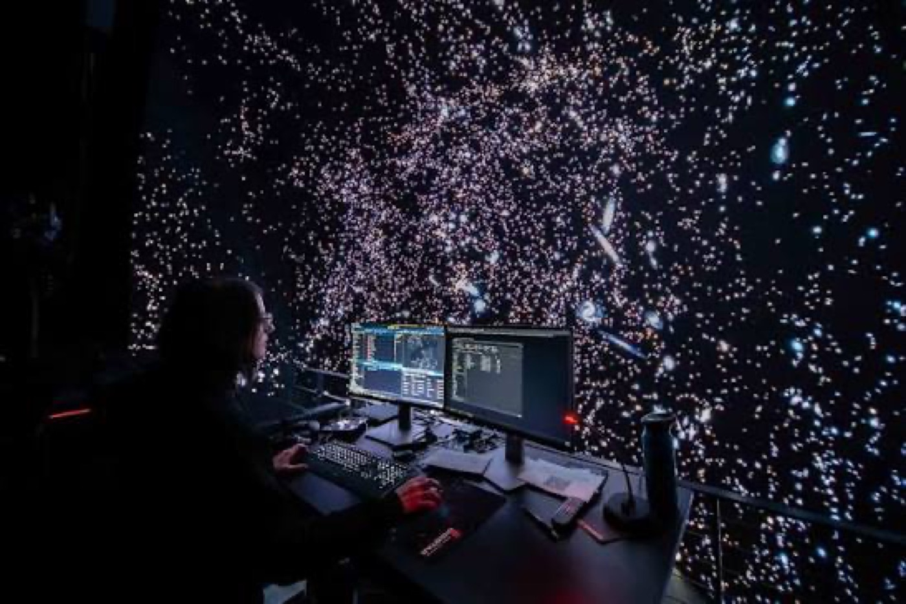

By David
What is a broadcast studio LED wall? A broadcast studio LED wall is a display used as a set background or presentation screen in television, streaming, and virtual production. It must look flawless to the camera, which places far stricter demands on refresh, color, and processing than an ordinary screen. This 2026 guide explains what studio buyers should require.
A broadcast studio LED wall is bought for the camera rather than for an audience. The studio crew rarely watches the screen directly, but millions of viewers see it, and every flaw that a normal viewer would never notice becomes obvious on television.
That inversion changes the specification. Refresh, color accuracy, and camera compatibility matter more than brightness or durability, and a wall that looks excellent in the room can still fail on air if it was not tested with the production camera.
The single most important requirement is refresh rate, because banding is the most visible failure on broadcast. Choose a high refresh rate, generally 3,840 Hz or above, and confirm the driver IC and scan rate with the supplier rather than accepting a headline figure.
Camera compatibility also depends on the shutter angle and frame rate the production uses. Test the wall with the actual camera and settings before the purchase, record the footage, and archive it as the acceptance baseline, as described in the high refresh guide.
| Requirement | Typical Value | Why It Matters |
|---|---|---|
| Refresh rate | 3,840 Hz or above | Prevents banding on camera |
| Driver IC | Fast scan, named model | Determines real refresh performance |
| Gray scale | 16 bits at operating brightness | Smooth backgrounds and shadows |
| Genlock | Supported where required | Synchronises with the camera system |
| Latency | Low, stated in frames | Matches the production workflow |
| Color space | Agreed target with report | Consistency with the set design |
Genlock and latency matter as much as refresh in a studio. A wall that is slightly out of sync with the camera system or that adds visible delay creates problems in live production that no amount of calibration will fix, so both should be specified and tested.
Broadcast color is held to a standard, and a studio wall must render color that matches the rest of the set. Specify a color space target, require a calibration report, and confirm the wall can hold that calibration across the whole surface and over time.
Skin tone is the most sensitive test. Ask the supplier to demonstrate the wall with footage containing faces rather than only with color bars, because a wall that measures acceptably can still render skin tones in a way that viewers notice immediately.
Moire is a pattern that appears when a camera captures a pixel grid, and it is one of the most common problems in studio walls. It depends on the pixel pitch, the camera resolution, and the distance between the camera and the wall, and it cannot be corrected in post.
Test the wall with the production camera at the working distance before the purchase. If moire appears, the options are a finer pitch, a different camera distance, or an optical filter, and the decision is far cheaper to make during specification than after installation.
| Studio Condition | Risk | Control |
|---|---|---|
| Camera close to the wall | Moire pattern | Finer pitch or greater distance |
| Fast camera movement | Banding and judder | High refresh and low latency |
| Bright studio lighting | Loss of contrast | Anti-reflective surface treatment |
| Mixed color temperature | Color mismatch with set | Calibration to an agreed target |
| Long operating days | Color drift | Periodic recalibration |
| Reflective studio floor | Screen reflections | Surface treatment and positioning |
The working distance is a creative decision as well as a technical one. A director who wants a close shot through the wall needs a finer pitch, while a wide shot tolerates a coarser one, and the specification should be set with the production team rather than in isolation.
The processing hardware determines whether the wall can meet the specification in practice. A quality processor handles gamma, dithering, and low-brightness compensation, while a basic one truncates the range and undermines the panel's theoretical performance.
Confirm the signal chain end to end before the order. The processor, the sending card, the receiving cards, and the camera system must work together, and a component that is incompatible with the studio's existing infrastructure creates a problem that no specification can solve.
A studio wall must fit the set and the lighting design. Reflections from the wall can interfere with the lighting, the frame must allow the wall to be positioned precisely, and the surface treatment affects how the wall interacts with studio lights.
Involve the lighting director and the set designer in the specification. A wall that is technically perfect but reflects badly or sits at the wrong height forces the production to work around it, and the creative compromise shows on screen.
A wall used for virtual production carries additional requirements. It must sync with the camera tracking system, hold very low latency, and maintain gray scale in the dark areas where the background meets the foreground action.
Test the wall with the actual camera tracking and the content that will be used. Virtual production failures are rarely about brightness, they are about sync, latency, and the dark-end performance that makes a composited shot look convincing or not.
Each mistake shows on air, which is the most expensive place to discover it. A broadcast studio LED wall specified around camera testing, color calibration, and signal chain compatibility delivers the flawless background the production expects.
A broadcast studio LED wall should be accepted only after a camera test with the production camera, because every failure mode that matters shows up on screen rather than in the room.
The wall is a creative tool as much as a technical one, so the specification should be agreed with the production team rather than imposed on it after the equipment arrives.
The wall earns its place through consistency across hundreds of shooting days, and the calibration and service plan is what keeps that consistency after the first week of production.
Studios that document their camera tests build a reference library that makes every future wall specification faster and more reliable than the last.
The production team should be present at the camera test, because the questions that matter on air are often creative rather than purely technical, and the answers change the specification.

For this application our range covers the requirement directly: the COB CV-PRO series and the RH-PRO fine-pitch COB.
Send us your camera system and studio layout, and we will propose refresh, color, and processing requirements.
Request Studio Wall SpecChat on WhatsApp